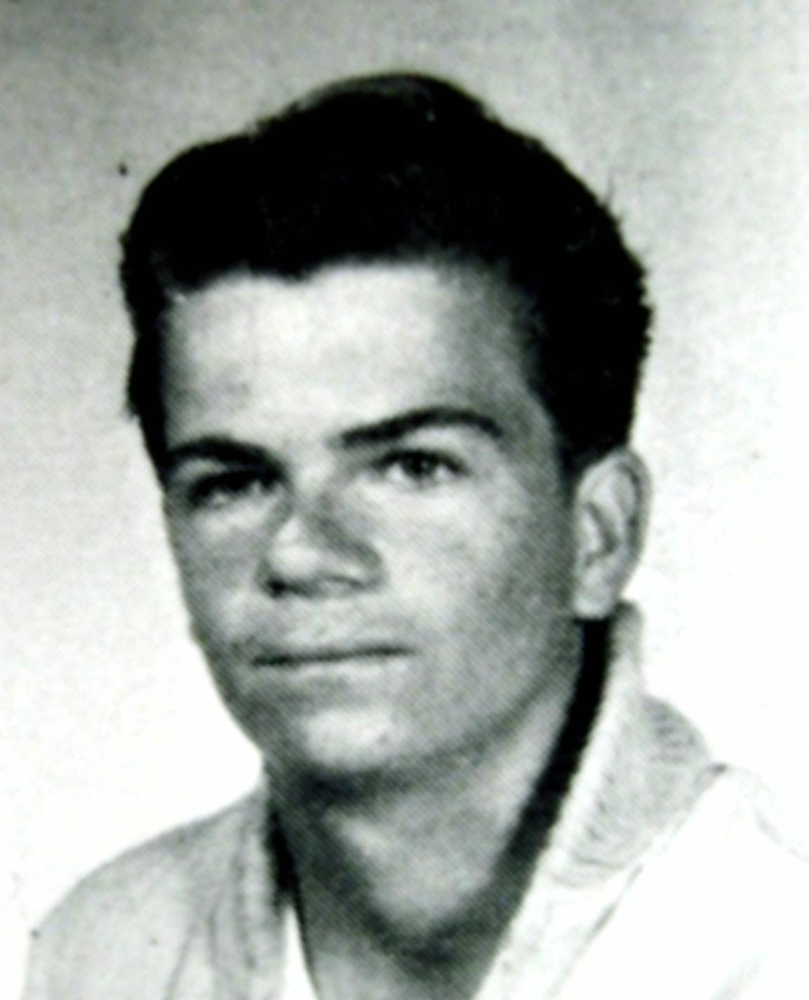
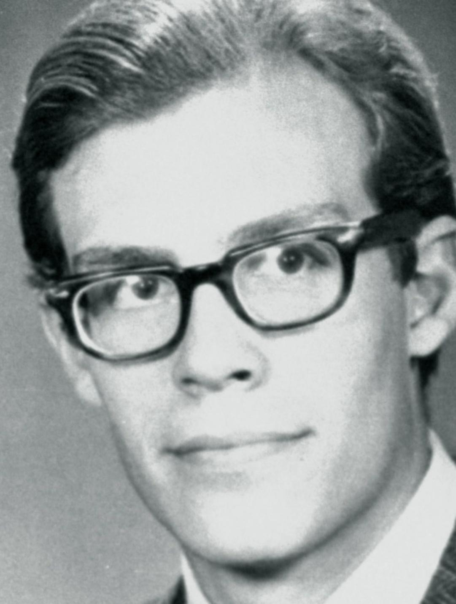
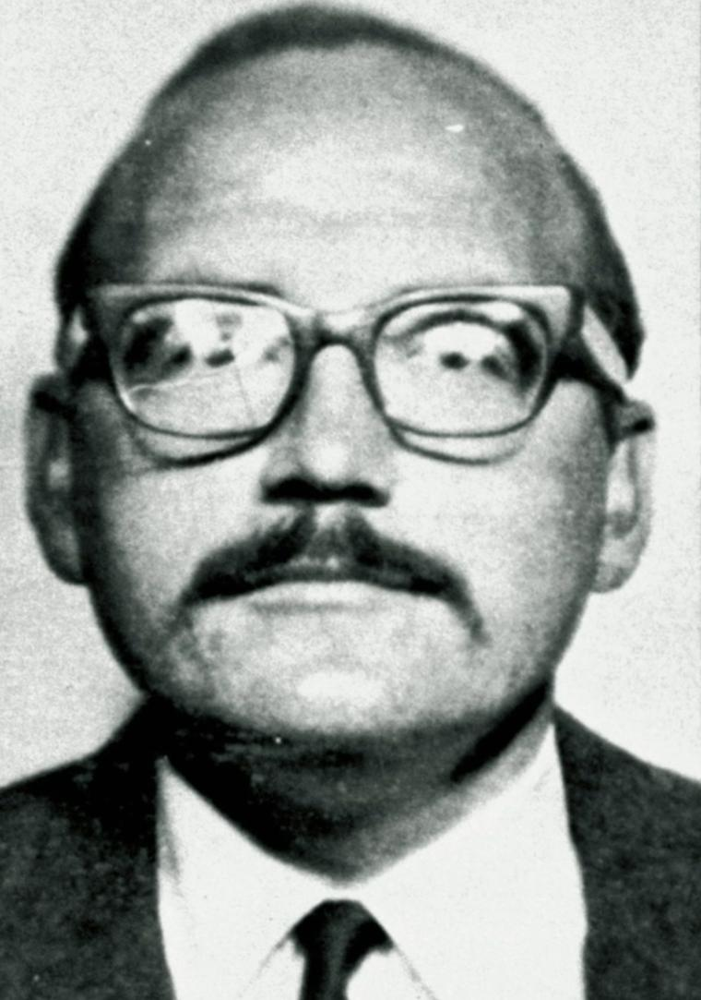
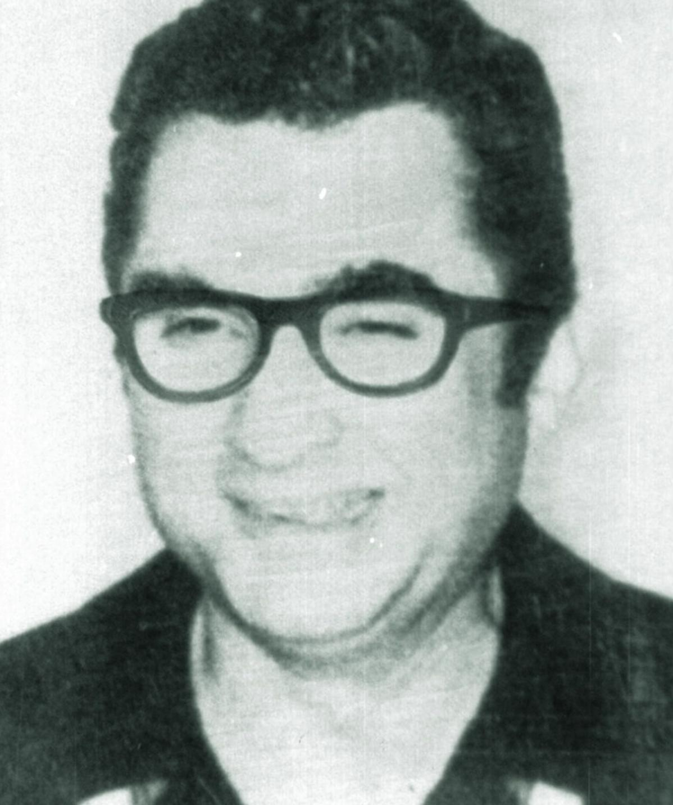
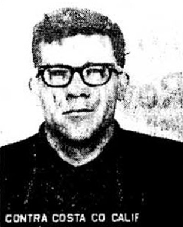
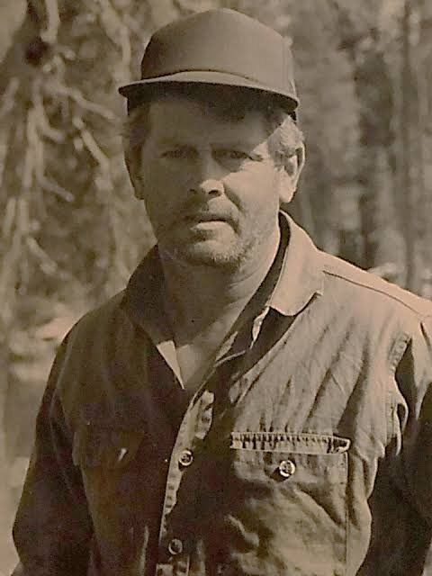
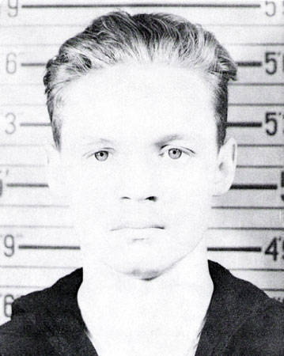
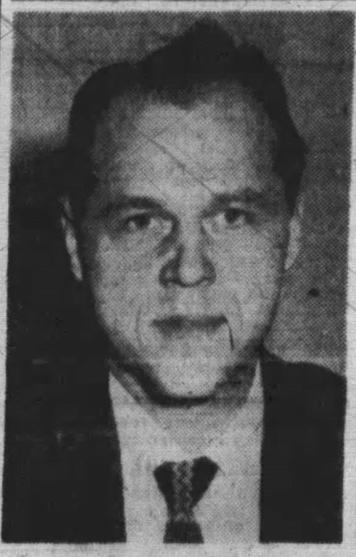

The Zodiac Killer: a cipher solved, a name still missing.
Between December 1968 and October 1969, a masked and then hooded gunman and knifeman killed in the San Francisco Bay Area, then mailed newspapers coded letters and bloody evidence. He is tied to at least five deaths. In 2020 amateurs cracked one of his ciphers. The message did not name him.
Case file at a glance
The Zodiac case will most likely be solved, if at all, by DNA and genealogy, not by another cipher or another theory. Every named suspect has a hole in the file, and the best physical evidence has never been fully used.
- Four attacks are accepted as Zodiac's.Lake Herman Road (Dec 20, 1968), Blue Rock Springs (July 4–5, 1969), Lake Berryessa (Sept 27, 1969), and the Paul Stine cab shooting in San Francisco (Oct 11, 1969). Others are suspected but unproven.
- One suspect was named by police, then excluded by DNA.Arthur Leigh Allen died in 1992. A partial DNA profile developed in 2002 from saliva on envelopes and stamps did not match him.
- The case is formally open in five jurisdictions.The FBI, California DOJ, Vallejo, and the Napa and Solano County sheriffs keep it open. SFPD has toggled between inactive (2004) and active.
- Two ciphers are still unbroken.Z13 (1970) and Z32 (1970). The 340-character cipher fell in December 2020 and the FBI confirmed it, but it contained no identity.
Editorial assessment of public sources, not a finding of fact. See the notice at the bottom of each section.
What happened
Four attacks are generally accepted as the Zodiac's. Each hit couples or a lone driver at night, in isolated spots, with no robbery. Dates below are from police and news records; where sources differ, that is noted.
Betty Lou Jensen and David Faraday
Two teenagers on a first date were shot beside Faraday's car on a gravel turnout. Faraday (17) was shot once in the head. Jensen (16) was shot five times in the back as she ran. The weapon was a .22 semi-automatic pistol. There were no witnesses and no robbery or assault.
Darlene Ferrin and Michael Mageau
Shortly after midnight a car pulled up behind the couple's. A man with a flashlight shot both with a 9mm pistol, left, then came back to fire more. Ferrin (22) died. Mageau (19) survived and gave police a description. About 40 minutes later a man phoned Vallejo police from a pay phone, reported the shooting, and said he had also killed the teenagers the previous Christmas.
The letters begin
The Vallejo Times-Herald, San Francisco Chronicle, and San Francisco Examiner each received a letter with a third of a 408-symbol cipher and a demand to print it on the front page or he would "cruise around all weekend killing lone people." A couple from Salinas, Donald and Bettye Harden, solved the 408 within about a week.
Cecelia Shepard and Bryan Hartnell
A hooded man with a gun, wearing a chest emblem of a cross inside a circle, bound the pair with plastic clothesline and stabbed both. Shepard (22) was stabbed ten times and died two days later. Hartnell (20) survived six stab wounds. The attacker drew the circle-cross symbol and the earlier dates on Hartnell's car door with a felt-tip pen and called the Napa police from a pay phone to report it.
Paul Stine
Stine (29), a cab driver and graduate student, was shot once in the head at close range after picking up a fare. Teenagers watching from a window saw a man wipe the cab and walk away. Two patrol officers passed a man in dark clothing minutes later because the dispatch had wrongly described the suspect as Black. The killer left partial right-hand prints on the cab. On Oct 13 the Chronicle received a bloody piece of Stine's shirt.
Bus-bomb threat and the Belli letter
The Zodiac threatened to shoot at a school bus. On Nov 8 he mailed the 340-character cipher. On Dec 20, 1969 he sent attorney Melvin Belli a card and another piece of Stine's shirt.
Kathleen Johns (suspected, unconfirmed)
Johns said a man pretending to help with a flat tire drove her and her infant on a nighttime detour, then fled when she escaped. She later identified Zodiac sketches. Police do not formally count this as a Zodiac attack.
Z13, Z32, and the last letter
In April and June 1970 the Zodiac sent the 13-character and 32-character ciphers and a map. A 1974 letter praised the film The Exorcist. Some experts believe later 1970s letters were also his; this is disputed.
Suspected-but-unproven earlier or related cases include Cheri Jo Bates (Riverside, Oct 30, 1966), Raymond Davis (Oceanside, April 1962), and others. Whether Bates belongs to the Zodiac is argued among investigators and is not settled.
The victims
Behind the legend are young people who had ordinary Friday and Saturday nights.
1968 school portrait. Public domain per Wikimedia Commons; first published in the San Francisco Chronicle.
DiedBetty Lou Jensen, 16
Student at Hogan High School in Vallejo. On a first date with David Faraday. Shot five times while running from the car.
1968 school portrait. Public domain per Wikimedia Commons; first published in the San Francisco Chronicle.
DiedDavid Faraday, 17
Hogan High School student, out with Jensen on their first date. Shot once in the head at point-blank range.

Portrait c. 1965. Public domain per Wikimedia Commons; Ventura County Star, Oct 19, 1969.
DiedDarlene Ferrin, 22
Vallejo waitress and mother of a toddler. Friends and family later said she had been frightened by a man who watched her. Shot five times.

Photo supplied by the site owner; source and license not yet confirmed. Removal or credit requests: use the contact form below.
SurvivedMichael Mageau, 19
Shot four times but survived. His description of the attacker is a core piece of evidence.
Photo supplied by the site owner; source and license not yet confirmed. Removal or credit requests: use the contact form below.
DiedCecelia Shepard, 22
College student at Pacific Union College. Stabbed ten times; died two days later.

Photo supplied by the site owner; source and license not yet confirmed. Removal or credit requests: use the contact form below.
SurvivedBryan Hartnell, 20
Stabbed six times in the back. His account of the hooded attacker is the main description of the Berryessa attack.

Photo supplied by the site owner; source and license not yet confirmed. Removal or credit requests: use the contact form below.
DiedPaul Stine, 29
San Francisco cab driver and doctoral student, working nights to support himself. Shot once in the head.
Families who want to share, change, or remove a photo can use the contact form at the bottom of this page.
Letters, ciphers & physical evidence
The Zodiac wanted publicity, and the letters and ciphers are most of what investigators have.
| Item | Date | Status |
|---|---|---|
| Z408 cipher (three-part letter) | Aug 1, 1969 | Solved by the Hardens within about a week. The text said he killed because it was fun and that his victims would be his slaves in paradise. |
| Z340 cipher | Nov 8, 1969 | Solved Dec 5, 2020 by David Oranchak, Sam Blake, and Jarl Van Eycke. FBI confirmed. Contains no name; it taunts police and denies he was the man on a TV show. |
| Z13 cipher ("My name is…") | Apr 20, 1970 | Unsolved. Many attempted solutions, none accepted. A 2025 "Marvin Merrill" reading is disputed. |
| Z32 cipher and Mt. Diablo map | June 26, 1970 | Unsolved. Threatens a bomb; none has been found. |
| Stine shirt scraps | Oct 13 & Dec 20, 1969 | Held by police. One envelope was tested for DNA; the result did not match Arthur Leigh Allen. |
| Partial fingerprints from Stine's cab | Oct 11, 1969 | Never matched to a named suspect. It is not proven that they belong to the killer rather than to a prior passenger. |
| Partial DNA profile from stamps and envelope seals | Developed 2002 | Partial; can exclude people but cannot identify one. Vallejo PD's 2018 genealogy attempt (GEDmatch) produced no result. |


Public documents
Scans of original police and FBI files exist online, posted by a private researcher. We list them so you can read them yourself. We could read the page listings but not the image files, so we do not summarize their contents.
| Document | Holder | What it shows | Access |
|---|---|---|---|
| Vallejo Police report, Blue Rock Springs (97 pages) | Vallejo Police Department | The department's report on the July 4, 1969 shooting of Darlene Ferrin and Michael Mageau. | Online, fan-hosted copy |
| Det. Ed Rust: Michael Mageau interview (4 pages) | Vallejo Police Department | A detective's report of his interview with the survivor. | Online, fan-hosted copy |
| Lake Herman Road reports (Solano County Sheriff, 76 pages; CA DOJ ballistics, 3 pages) | Solano County Sheriff; Benicia Police; California DOJ | Reports on the Dec 20, 1968 double murder, including a ballistics report. | Online, fan-hosted copy |
| Paul Stine: SFPD report by Officer Armand Pelissetti (2 pages, redacted) | San Francisco Police Department | Officer's report on the Oct 11, 1969 cab shooting. Also posted: Stine's death certificate and record of death, and an excerpt of a DOJ report. | Online, fan-hosted copy |
| Lake Berryessa reports | Napa County Sheriff and other agencies | Records on the Sept 27, 1969 stabbing of Cecelia Shepard and Bryan Hartnell. | Online, fan-hosted copy |
| FBI files on the Zodiac investigation (900+ pages) | FBI (released under FOIA) | Files the compiler says were obtained by FOIA request, including material on suspects and handwriting analysis of Zodiac letters. | Online, fan-hosted copy |
| Index of police reports and FBI files | Compiled by zodiackillerfacts.com | The page that lists all of the collections above. It does not say how the scans were obtained. | Online, free |
Access labels: Online, free = we could open it. Fan-hosted copy = a private researcher posted scans; originals are held by the named agency, and we cannot vouch for completeness. Quoted in news = reporters read it; we did not see the document itself. Request needed = held by an agency or court. Withheld = the holder has not released it. We cannot reach non-public records, and we do not try to.
Online discussion (unverified)
Where people talk about this case online, and how to read it.
| Platform | Live search | What you tend to find |
|---|---|---|
| Google: Reddit | site:reddit.com search | Public Reddit threads that Google has indexed, including old discussions. |
| Google: X and Twitter | X and Twitter posts | Public posts and profiles that appear in search results. |
| Google: Facebook | Public Facebook pages and posts | Only public pages and groups that Google can see. Private groups never appear. |
| Google: Instagram and TikTok | Instagram and TikTok | Public posts, memorials, and videos. |
| Google: forums | Forums and message boards | Long-running true-crime forums. |
| Google News | Latest news | Newest reporting, which is usually more reliable than posts. |
| Search Reddit | Long discussion threads and theories, often by amateur researchers. No sign-in needed to read. | |
| X (Twitter) | Search X | Short posts, news links, and anniversary notes. May require sign-in. |
| Search Facebook | Public groups and family or community pages. Requires sign-in. | |
| Search #zodiackiller | Memorial and true-crime posts. Requires sign-in. | |
| YouTube | Search YouTube | Documentaries, news clips, and interviews. Quality varies widely. |
Be careful with online theories. Naming a private person as a suspect can harm an innocent family, and many "identifications" on forums have been wrong. Our own tools could not read these platforms: Reddit blocks automated access, and the others require an account. The Google searches above work from your browser. To get new public mentions by email, make a free Google Alert for the case name in quotation marks.
Coverage timeline and verification
What local and national reports say, and when we last checked for a solution.
| Date | Outlet | What it reported | Link |
|---|---|---|---|
| Oct 6, 2021 | |||
| The Hill (Fox News) | |||
| Case Breakers named Gary Poste; the FBI said the investigation remains open and unsolved. | |||
| Read | |||
| Dec 23, 2025 | |||
| LADbible; Newsweek | |||
| Investigator Alex Baber named Marvin Margolis; reported as "under FBI review," with no FBI finding. | |||
| Read | |||
| May 14, 2026 | |||
| Fox News | |||
| An LAPD cold-case detective said he was looking at a 1943 fingerprint card tied to Margolis. | |||
| Read |
Status is re-checked on a regular schedule. If you know of a development we missed, use the clue form near the top of this page or the contact form, and include a link.
Suspects
Hundreds of people have been proposed over the years. These are the ones most often named. Being listed here is not an accusation.

SFPD composite from witness descriptions, 1969. Public domain per Wikimedia Commons.
Not a suspectUnidentified: the SFPD composite
Why named: Drawn from witnesses to the Stine shooting. Many people have been compared to it.
Against: No one has been confirmed as the man in the sketch.

1967 California driver's license photo. Public domain per Wikimedia Commons.
Excluded by partial DNAArthur Leigh Allen (d. 1992)
Why named: Vallejo teacher, convicted of child molestation. Lived in Vallejo, had a Zodiac-brand watch, once said he wanted to call himself "Zodiac," owned knives and similar boots. Popularized by Robert Graysmith's books and the 2007 film. The only suspect police publicly named.
Against: 2002 partial DNA from envelopes and stamps excluded him. Fingerprints and handwriting could not be linked to him. Toschi said in 2010 the evidence against him "turned out to be negative."

Photo supplied by the site owner, who identified the person; the original source, date, and license are not confirmed. Removal or credit requests: use the contact form below.
Open questionLawrence Kane (d. 2010)
Why named: Kathleen Johns picked his photo from a lineup. Linda Ferrin said he harassed her sister. Officer Don Fouke said he resembled the man near the Stine scene.
Against: His prints did not match the Stine cab prints.
Richard "Rick" Marshall (d. 2008)
Why named: Ham-radio operator with a basement apartment and a typewriter. Used phrases like "the Red Phantom" that echo Zodiac letters. Napa detective Ken Narlow pursued him.
Against: Fingerprints did not match; Narlow later called him a poor suspect.

Photo supplied by the site owner, who identified the person; the original source, date, and license are not confirmed. Removal or credit requests: use the contact form below.
UnsupportedRichard Gaikowski (d. 2004)
Why named: Counterculture newspaper editor who resembled the Stine sketch; ex-medic; accused in letters by a former co-worker.
Against: Accuser is regarded by many Zodiac researchers as unreliable; no physical link.

Photo supplied by the site owner, who identified the person; the original source, date, and license are not confirmed. Removal or credit requests: use the contact form below.
UnverifiedGary Francis Poste (d. 2018)
Why named: Named in 2021 by the Case Breakers group of retired investigators, citing scars, a shoe size, and circumstantial links.
Against: FBI said the case was still open with no new information. Riverside investigators called the claims circumstantial. A claimed DNA match has not been released.
Photo supplied by the site owner, who identified the person; the original source, date, and license are not confirmed. Removal or credit requests: use the contact form below.
DiscreditedEarl Van Best Jr. (d. 1984)
Why named: Named by his son Gary Stewart in a 2014 book and a 2020 documentary.
Against: Experts rejected the DNA, print, and writing matches; a private investigator found he may have been abroad during key dates.

Photo supplied by the site owner, who identified the person; the original source, date, and license are not confirmed. Removal or credit requests: use the contact form below.
UnverifiedLouie Joseph Myers (d. 2002)
Why named: A friend said Myers confessed in 2001. He attended the same schools as the first victims.
Against: He was 17 in 1968–69. No physical evidence.
Ross Sullivan (d. 1977)
Why named: Riverside City College library worker, linked to the Cheri Jo Bates killing; resembled the sketch.
Against: An alibi for the Bates murder reportedly held up.

FBI booking photo. Public domain per Wikimedia Commons.
Ruled outTed Kaczynski (d. 2023)
Why named: Cipher interest and press demands; looked at in 1996.
Against: Ruled out by prints, handwriting, and travel records.

Photo supplied by the site owner, who identified the person; the original source, date, and license are not confirmed. Removal or credit requests: use the contact form below.
Unverified, newestMarvin Margolis (d. 1993)
Why named: Named by investigator Alex Baber in Dec 2025 as both the Zodiac and the Black Dahlia killer. See the full latest-suspect section.
Against: No agency has confirmed it. A family member rejects the claim. Methods are disputed. Reports say only that evidence is "under review."
Where a card shows a silhouette, we found no freely licensed photo. Families or individuals who want a photo added, changed, or removed can use the contact form at the bottom of this page.
Our hypothesis
This is Cold Case Checker's editorial reading of the public record. It is a working theory, not a finding, and it names no individual.
One offender, local to Vallejo/Solano County, probably already in the file but never cleared by science
- One person committed the four accepted attacks. Shared pattern: nighttime, isolated couples or a lone driver, no robbery, a self-reported call or letter, and the same symbol. The two 9mm pistol claim between Ferrin and Stine would be worth checking, since no confirmed ballistics comparison is public.
- He lived or worked in the Vallejo area in 1968–69. He knew Lake Herman Road and Blue Rock Springs, phoned Vallejo police from nearby pay phones within minutes of two attacks, and the Ferrin murder looks personal, since her family says a stranger had been watching her.
- He was not a famous name. Nearly 60 years of work have not turned up a fingerprint, DNA or handwriting match for the leading suspects. The most likely outcome is that the killer is a man who was interviewed once, or never, and then forgotten.
- He likely stopped because of life changes, not capture. Death, illness, prison, a move, or a job change is more likely than a retirement. The letters faded after 1974.
Confidence figures are our judgment, not statistics. "Already named" is low because the DNA, prints and timelines undercut each public suspect we reviewed. We would revise it immediately if an agency released a match.
Missing links
Places where the record looks thin, based on what is public. Some of these may already have been done privately; we flag them as questions, not accusations.
1. Re-test the best DNA, not the stamp
The 2002 profile came from saliva on stamps and seals, which may have been handled by clerks or family. Whole-genome sequencing from envelope-flap, shirt-scrap, or victim-clothing samples would be far more useful for genealogy than the short STR profile used so far. Vallejo's 2018 GEDmatch attempt gave no definitive result; a small profile like this one is a plausible reason, though that is our inference.
2. Run the cab prints through today's systems
The Stine prints predate modern automated fingerprint databases. Public records do not show a full search against current criminal, civil, and military files, or a check against people who were Stine's earlier fares.
3. Compare the Berryessa evidence
Napa County tried in 2010 to get DNA from items collected at Berryessa and failed. Newer methods on the same items (clothesline, Hartnell's clothing, the car door) have not been reported.
4. Test the Bates link properly
If the 1966 Riverside letters and Cheri Jo Bates's case belong to the Zodiac, they would give a younger, traceable trail 3 years earlier. Linking or ruling it out would reshape the search.
5. The unsolved ciphers
Z13 probably holds a name or a word. The 340 shows he used transposition and made odd choices, so Z13 may not be a plain substitution. A solution that cannot be checked against facts (like a name found only after the fact) proves little.
6. Ferrin's circle
Her family and friends reported being watched and threatened. A systematic rebuild of who knew her schedule, her workplace, and her night out on July 4 has not been published.
7. The voices
Dispatchers and the Napa operator heard the Zodiac's calls. Original recordings and any analysis with modern voice tools are not public.
8. Population thinking
Instead of testing named suspects, agencies could screen all men who lived in the Vallejo–Benicia–Napa area in 1968–69 and match them against military, school, and employer records. We have found no public report that this has been done.
Latest suspect: Marvin Margolis
The most recently named suspect, and the only one in the file that no agency has publicly ruled out in the Zodiac case. This section sets out the claims, the counter-evidence, and the tests that could settle it.
Why he is the current suspect
- He is new, and it is tied to something checkable. Baber says he obtained Margolis's 1943 government fingerprint card, which police had not examined before, and an LAPD cold-case detective said in May 2026 that he would not turn it down if it could help.
- Some veterans back it. Reports say two retired LAPD homicide detectives, one of whom worked on the Dahlia case, support Baber's conclusion, and a retired NSA codemaker is quoted saying his work "checked out." These are opinions, not findings.
- He already had a place in a famous case. He was a suspect in the 1947 Elizabeth Short murder and was listed among 22 persons of interest in 1951.
- Nobody has cleared him for the Zodiac. The LAPD reportedly cleared him in the Short case, but a Zodiac comparison has not been publicly made.
Who he was (reported facts)
- Navy medical corpsman in World War II, reported among the first troops to land on Okinawa in April 1945. Discharged with a 50% disability after statements about killing anyone who sent him to war again, per the LA Times as relayed by Newsweek.
- In 1946–47 he was a 21-year-old pre-med student at USC. He lived with Elizabeth Short for about 12 days on Hollywood Boulevard roughly three months before her murder. He first lied to police about how well he knew her.
- Later used the names Skip, Marty, and Marvin Merrill. He worked as a builder, architect, portrait painter, and Intel engineer, lived in Atascadero, Santa Clara, and Oceanside, married twice, and had four children.
- Received a 30-day jail term and probation in the early 1970s for defrauding customers of his Oceanside auto-repair business. He died of cancer in Santa Barbara in July 1993.
The sources do not give years for his California residences, so where he was in 1968–70 is not established in what we read.
The evidence claimed against him
| Claim | Source | Status | Our rating |
|---|---|---|---|
| Z13 cipher (April 1970) decodes to "Marvin Merrill" | Baber; says he generated 71 million 13-letter names and checked them against public records | Unverified. No agency or independent cipher group has endorsed it. | Weak |
| A 1992–93 pencil drawing titled "Elizabeth" has wound-like markings similar to Short's injuries and the word "Zodiac" hidden in the shading | Baber; the drawing was provided by a family member | Unverified. Depends on enhancement and interpretation. | Weak |
| Zodiac code uses the keyword "Elizabeth" | Former NSA mathematician Patrick Henry, per Newsweek | Opinion; not independently tested publicly. | Weak |
| His 1943 fingerprint card matches a print on a package mailed to the LA Herald Express in January 1947 | Baber says his team "could not exclude" him | "Could not exclude" is not a match. LAPD says the claim needs vetting. | Open |
| Handwriting in Dahlia and Zodiac correspondence matches his drawing | Baber (via LADbible) | No independent examiner reported. | Weak |
| A sword he brought from Japan could have caused the Zodiac stab wounds | Baber (via LADbible) | Not reported by other outlets; no forensic comparison shown. | Weak |
| Relationship with Elizabeth Short, military trauma, lied to police in 1947 | LA Times and Newsweek reporting | Reported as fact. | Documented, but it only ties him to the Dahlia case |
The case against the theory
- The LAPD reportedly interviewed and cleared him in 1947. Researcher Larry Harnish notes the report lacks alibi details and that he stayed a suspect, so this cuts both ways.
- A 13-letter cipher can fit many names. Generating 71 million candidates and searching records is the kind of method that can produce a "fit" after the fact. A real solution should have been predicted, or checked against something independent.
- No physical link to Zodiac scenes. Nothing published connects him to the Stine cab prints, the stamp DNA, or any Zodiac scene.
- Connecting two famous cases invites bias. The 1947 and 1968–69 crimes differ in method, victim type, and the killer's behavior.
- The family does not agree. One son provided the drawing; a son quoted in other coverage rejects the theory. Reports differ on the family's stance.
- No agency has confirmed it. Some headlines say the evidence is "under FBI review." We found no FBI statement that says so.
What would settle it
- Compare the 1943 card to the Stine cab prints. If he left those prints, the case is solved. If he did not, and the cab prints are the killer's, he is out.
- Compare to the 2002 partial stamp DNA. A voluntary sample from a close relative could exclude him quickly, or not.
- Publish Baber's raw material. Release the cipher method, the unenhanced drawing, and the print comparison to independent examiners.
- Establish his whereabouts on Dec 20, 1968; July 4, 1969; Sept 27, 1969; and Oct 11, 1969. Employment, school, and tax records could do this.
Worth testing, not yet worth believing
We rate Margolis higher than most names on the list, because his case offers concrete, checkable items (a fingerprint card, a DNA exclusion route, whereabouts records), and because it comes with some professional support. We still put the chance he was the Zodiac at roughly 10–15%. The strongest claims are interpretive (a cipher reading and hidden words in a drawing), the one physical item is "could not exclude," and the most reliable facts tie him to the Dahlia case, not the Zodiac. One fingerprint comparison to the Stine cab prints would raise or drop that number sharply.
Our estimate is editorial judgment, not a statistic, and we will change it when evidence changes.
Suspect elimination matrix
The same ten suspects, scored against each type of evidence. A blank ("—") means no public information, not that the test came back clean.
| Suspect | DNA | Fingerprints | Handwriting | Alibi / timeline | Witness ID | Opportunity |
|---|---|---|---|---|---|---|
| Arthur Leigh Allen | ✗ excluded (partial) | — not linked | — not linked | — | — | ✓ lived in Vallejo |
| Lawrence Kane | — | ✗ no match to cab prints | — | — | ✓ three witnesses | ✓ Tahoe/Bay Area |
| Richard Marshall | — | ✗ no match | ? similarities noted | — | — | ✓ Riverside, then Bay Area |
| Richard Gaikowski | — (agencies declined to compare) | — | — | ? says abroad, unproven | ? family claims | ✓ Bay Area |
| Gary Poste | ? claimed, not released | — | — | — | — | ? disputed |
| Earl Van Best Jr. | ✗ analysis discredited | ✗ discredited | ✗ discredited | ✗ may have been abroad | — | ? |
| Louie Myers | — | — | — | — | — | ✗ age 17 in 1968–69 |
| Ross Sullivan | — | — | — | ✗ Bates alibi held | — | ? Riverside only |
| Ted Kaczynski | — | ✗ ruled out | ✗ ruled out | ✗ travel records | — | — |
| Marvin Margolis | — | ? LAPD testing 1943 card (Dahlia case) | ? disputed | — | — | ? disputed |
✗ excluded or contradicted · ✓ supports · ? disputed or unverified · — nothing public. Summarized from the Suspects table above; no cell is an official finding.
Evidence-gap tracker
Each physical or documentary item, what is known about its testing, and what appears untested. "Not public" means we could not find a report, not that nothing was done.
| Item | Tested | Gap |
|---|---|---|
| Stamps and envelope seals (letters) | 2002 SFPD lab: partial DNA profile; Allen excluded. Three more letters tested without a convincing result. | Profile too small for identification. Saliva on a stamp may not be the killer's. Whole-genome work not reported. |
| Envelope that held a Stine shirt scrap | Reported as tested; no match to Allen. | Full results and handling history not public. |
| Partial prints on Stine's cab | Compared to named suspects over decades. | A search against today's FBI database is not documented publicly. Not proven to be the killer's. |
| Berryessa items (clothing, bindings, car door) | 2010: Napa County tried to get DNA and failed. | No report of retesting with newer methods. |
| Z13 and Z32 ciphers | Many amateur attempts, none accepted. | Unsolved. The Z32 map's bomb claim was never verified. |
| Zodiac phone calls (Vallejo, Napa) | Dispatchers heard them at the time. | Recordings and modern voice analysis: not public. |
| Ballistics (.22 and two 9mm firearms) | Compared in 1969–70. | Whether the 9mm used on Ferrin matches the one used on Stine is stated differently by different sources. |
| Cheri Jo Bates (Riverside, 1966) records | Letters and a typewriter lead were studied. | Whether Bates belongs to the Zodiac is unresolved. |
| Donna Lass (Lake Tahoe, Sept 1970) | A skull found in 1986 was identified as hers by DNA in 2023, per Wikipedia. | A Zodiac link, based on a postcard and a claim by one investigator, is unproven. |
Forensic technology readiness
Which modern tools could still move the case, and whether public records show they were tried.
| Tool | What it could do | Status in this case |
|---|---|---|
| Forensic genetic genealogy | Build a family tree from DNA and narrow to a few people. | Tried 2018 Vallejo police used GEDmatch, with no definitive result. Needs a much better DNA sample. |
| Whole-genome sequencing from degraded DNA | Generates the dense genetic data genealogy needs. | Not reported |
| FBI Next Generation Identification (fingerprints) | Search partial prints against criminal, civil, and military files. | Not public |
| Touch-DNA on clothing, ties, and the cab | Recover DNA from handled objects. | Attempted 2010 Napa; failed. |
| Voice analysis | Compare the 1969 calls to candidate voices. | Not public |
| Statistical cryptanalysis | Solve ciphers computationally. | Worked Z340 in 2020. Z13 is too short to solve with this alone. |
| Machine-learning stylometry | Compare writing across letters and candidates. | Contested 2026 headlines describe AI-assisted claims; we have not reviewed their methods. |
How similar cases broke
Three cold cases that were solved, and what that implies here.
Golden State Killer
Joseph DeAngelo was arrested in April 2018 after investigators matched crime-scene DNA to relatives in a public genealogy database. Lesson: a usable DNA sample can beat decades of dead ends. The Zodiac sample is the weak link.
BTK
Dennis Rader was caught in 2005 after he sent a floppy disk to police and the file's metadata pointed to his church. Lesson: killers who contact the press leave traces. Zodiac's letters are a large, still-underused archive.
Gilgo Beach
Rex Heuermann was charged in 2023 after investigators linked burner-phone activity, a vehicle, and DNA recovered from discarded items. Lesson: re-looking at old data with new tools can point to a person who was never on the list.
Case details come from public news coverage and should be confirmed in court records. Charges are not convictions unless a page says so.
Claim and false-lead log
Claims that have circulated, and where they stand. Listed so readers can recognize them, not to promote them.
| Claim | Source and date | Where it stands |
|---|---|---|
| Allen is the Zodiac | Robert Graysmith books (1986, 2002); 2007 film | Excluded by partial DNA (2002); never charged. |
| Z13 reads "Kayr" (Kane) | Fayçal Ziraoui, 2021 | Disputed by many cipher researchers. |
| Gary Poste is the Zodiac | Case Breakers, 2021 | FBI: case still open, no new information. Key evidence not released. |
| Earl Van Best Jr. is the Zodiac | Gary Stewart book (2014); FX documentary (2020) | Experts rejected the DNA, print and writing matches. |
| Jack Tarrance is the Zodiac | Dennis Kaufman, Discovery documentary (2007) | Law enforcement called the evidence "nonsense." |
| Marvin Margolis was the Zodiac and the Black Dahlia killer | Alex Baber; reported Dec 2025 and again in spring 2026 | No agency confirmation. Family rejects it. Reports say evidence is "under review." |
| "Alfred E. Neuman" as the Z13 solution | Amateur proposal | Not accepted. |
Where it happened
A schematic of the four confirmed scenes. It is not to scale and not a survey. For real maps, use the links below.

The first two attacks and the Vallejo police call all sit within a few miles of each other. That fits the idea of a Solano County local. Open in maps: Lake Herman Rd · Blue Rock Springs · Lake Berryessa · Washington & Cherry, SF
Source-quality ratings
How much weight each source type deserves. Higher means closer to primary records.
| Source | Type | Rating | Use with care because |
|---|---|---|---|
| FBI case page and FBI Vault | Agency record | A | Concise; many files still withheld. |
| Wikipedia: Zodiac Killer and suspects | Tertiary, footnoted | B | Good citations, but anyone can edit it. |
| zodiackiller.com (Tom Voigt) | Long-running researcher site | B− | Strong archive; advocacy on some suspects (author argues Allen). |
| The Hill, LA Times, SF Chronicle | News reporting | B+ | Report claims by others; check what is attributed. |
| LADbible, tabloid and aggregator coverage | Secondary news | C | Headlines often overstate. "Under FBI review" is not an FBI finding. |
| Case Breakers, independent investigators, podcasts | Advocacy / amateur | D | Evidence often unreleased or unverified. |
Who holds the case & how to request records
Five agencies keep the case open. Most original records are held by local departments.
San Francisco Police
Stine murder and the 1969–70 letters.
Vallejo Police
Ferrin and Mageau (Blue Rock Springs); Lake Herman Road with Solano County.
Napa County Sheriff
Lake Berryessa attack.
Solano County Sheriff
Lake Herman Road double murder.
FBI San Francisco
Case open since 1968. Records through the FBI Vault or a FOIA request.
California DOJ
Lists the case as open. Holds state lab and database records.
Sample public-records request
Under the California Public Records Act, I request copies of non-exempt records relating to the [Lake Herman Road / Blue Rock Springs / Lake Berryessa / Stine] investigation (1968–1970), including incident reports, lab reports, and any index of evidence. Please send electronic copies. If any part is withheld, please identify the exemption relied on and release all reasonably segregable material.
Agencies often withhold records of open investigations, so expect partial answers. For the FBI, use a FOIA request instead.
Remembering the victims
Seven people were attacked; five died. Families lived with this for decades while the killer became a character in books and films.
Change log
- Oct 8, 2026: Added "Latest suspect" section (Marvin Margolis).
- Oct 8, 2026: File published. Added suspect matrix, evidence gaps, technology readiness, comparable cases, claim log, map, source ratings, records guide, victims note.
News & databases
Live headlines (last 3 months) and the main places where records live.
In the news
Loading headlines…
Official
Research
News archives
Police reports. Most original Zodiac police reports are not publicly posted. Researchers have copied some from SFPD, Vallejo, and Napa archives, and the FBI Vault holds released files. Ask the relevant agency under the California Public Records Act for anything not online.
Sources
Every fact on this page comes from one of these. Where they disagree, we say so above.
- Zodiac Killer, Wikipedia (attacks, ciphers, 2002 DNA, agency status).
- Zodiac Killer suspects, Wikipedia (suspect evidence and disputes).
- Zodiac Killer victims, zodiackiller.com (weapons and injury counts).
- Evidence Room, zodiackiller.com.
- FBI says Zodiac case still open after new theory arises, The Hill, 2021 (Case Breakers claim).
- Major update as FBI "reviewing new suspect", LADbible, Dec 23, 2025 (Margolis claim).
- Were Zodiac Killer and Black Dahlia murderer the same man?, Newsweek, Dec 23, 2025 (Margolis biography and claims, relaying LA Times reporting).
- LAPD examines new fingerprint tied to victim's ex-boyfriend, Fox News, May 14, 2026 (fingerprint card, LAPD detective's comment).
- Has the Zodiac Killer been identified?, Jeffrey Falk (commentary; not a primary source).
- FBI case history (not retrievable when we checked; linked for readers).
Photo credits
Every image on this page is hosted by Wikimedia Commons, which labels it as public domain. We link each file page so you can check the license and history yourself. Public-domain works need no credit, but we give one anyway.
| Image | Author / source | License (per Commons) |
|---|---|---|
| Faraday and Jensen portraits | 1968 school portraits, San Francisco Chronicle, Dec 1968 | Public domain |
| Darlene Ferrin portrait | Professional portrait c. 1965; Ventura County Star, Oct 19, 1969 | Public domain |
| Ted Kaczynski booking photo | Federal Bureau of Investigation | Public domain |
| Marvin Margolis photo | Supplied by the site owner; original publisher not identified (appears to be a newspaper reproduction) | Not verified Removal on request via the contact form |
| Bryan Hartnell portrait | Supplied by the site owner; original photographer or publisher not identified | Not verified Removal on request via the contact form |
| Paul Stine portrait | Supplied by the site owner; original photographer or publisher not identified | Not verified Removal on request via the contact form |
| Michael Mageau portrait | Supplied by the site owner; original photographer or publisher not identified | Not verified Removal on request via the contact form |
| Cecelia Shepard portrait | Supplied by the site owner; original photographer or publisher not identified | Not verified Removal on request via the contact form |
| Arthur Leigh Allen, 1967 | State of California (driver's license) | Public domain |
| SFPD composite sketch | San Francisco Police Department | Public domain |
| Oct 1969 wanted poster | San Francisco Police Department | Public domain |
| Nov 8, 1969 cipher card | Zodiac Killer (author of the card) | Public domain |
| Hartnell's car door | Message: Zodiac Killer; photo: FBI | Public domain |
| June 26, 1970 letter (Z32) | Zodiac Killer (author of the letter) | Public domain |
| Z13 cipher | Dragallas | CC BY-SA 4.0 (credit required; shown unmodified) |
| Lake Berryessa view | James Postema | CC BY 4.0 (credit required; shown unmodified) |
Not every detail in the timeline (for example the Hartnell car-door writing, the Stine witnesses, and the Johns kidnapping) was re-confirmed against a primary document for this draft. Those items follow widely published accounts and are the first to double-check.